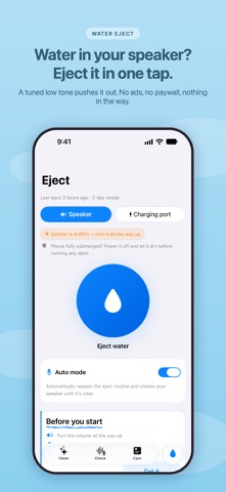
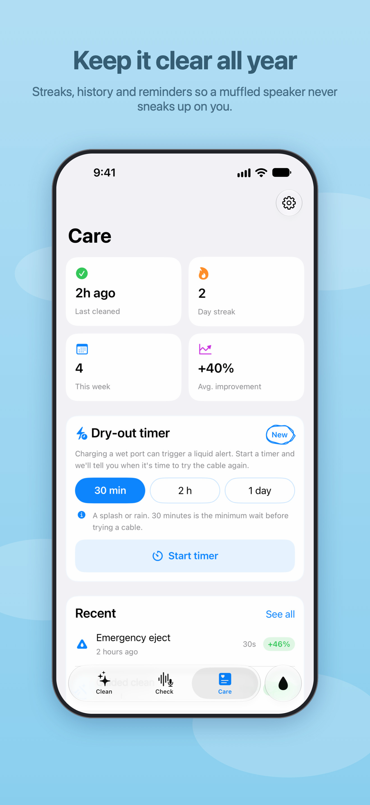
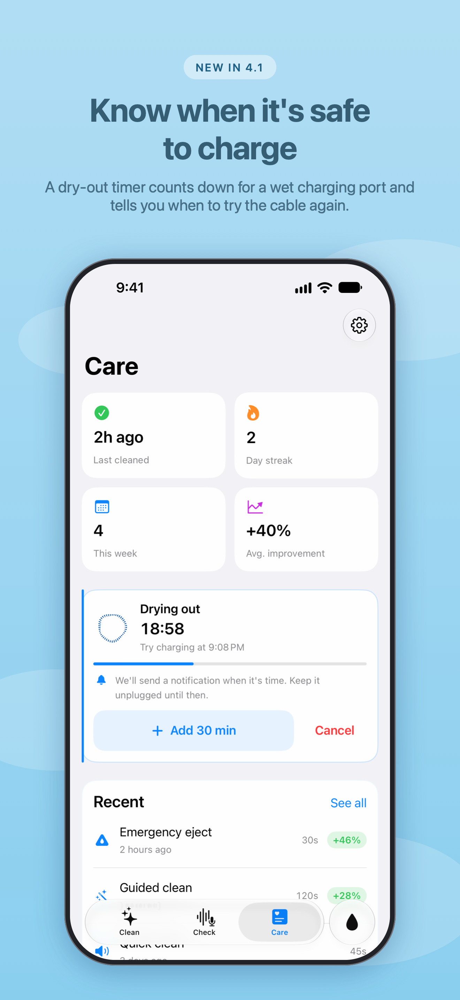
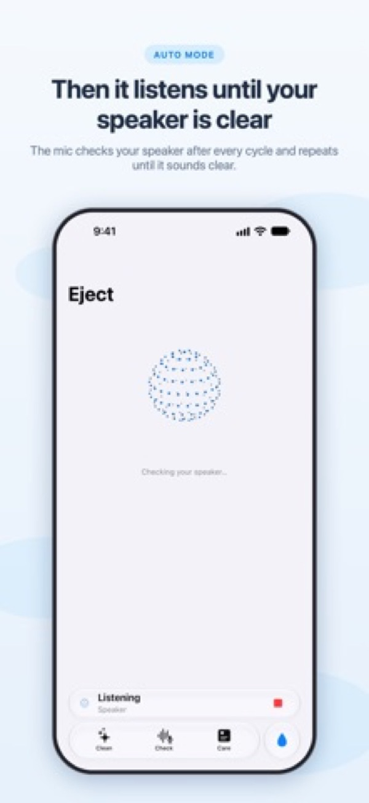

Clear Speaker: Water Eject
Water eject for the iPhone speaker · App Store · updated 17 October 2026
What is new
Version 4.2.1 is live. The Care tab keeps a day streak, a weekly count and the average improvement from the microphone clarity check, and a maintenance reminder that repeats daily, weekly or monthly.
Facts
- Version
- 4.2.1 (build 2026100703)
- Platforms
- iPhone and iPad
- Languages
- English (US, UK, Australia, Canada) and Spanish (Mexico), among 15 languages in the String Catalog
- Price
- Free, no ads, no paywall in 4.2.1
- Privacy
- All processing is on the device; no data leaves the phone
- Accessibility
- Accessibility labels and Reduce Motion handling in the Check, Clean and dry-out timer screens; store previews list Dark mode and full VoiceOver
- Window
- 26 December 2026 to 10 January 2027
- Developer
- One developer, Dubai
Screens
Screens from the App Store set. These are App Store frames with captions, because the repo holds no raw captures.




Why now
- About splash, water, and dust resistance of iPhone 7 and later Apple Support, undated